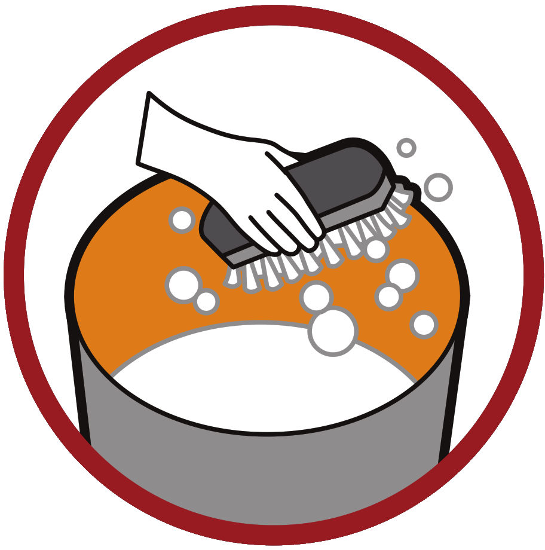

Mantenha bem tampados tonéis e barris de água

Lave semanalmente por dentro com escova e sabão os tanques utilizados para armazenar água.
Mantenha a caixa-d’água bem fechada. Coloque também uma tela no ladrão da caixa-d’água.
Remova folhas, galhos e tudo que possa impedir a água de correr pelas calhas.
Não deixe água acumulada sobre a laje.
Encha os pratinhos de vasos de plantas com areia até a borda.
Outra opção para os pratinhos de plantas é lavar uma vez por semana.
Troque a água dos vasos de plantas aquáticas e lave-os com escova, água e sabão uma vez por semana.
Coloque o lixo em sacos plásticos e mantenha a lixeira bem fechada.
Feche bem os sacos de lixo e deixe-os fora do alcance de animais.
Mantenha as garrafas com a boca virada para baixo, evitando o acúmulo de água.
Pneus devem ser acondicionados em locais cobertos.
Faça sempre a manutenção de piscinas ou fontes utilizando os produtos químicos apropriados.
 Se o ralo não for de abrir e fechar, coloque uma tela fina para impedir o acesso do mosquito à água
Se o ralo não for de abrir e fechar, coloque uma tela fina para impedir o acesso do mosquito à água
Coloque areia dentro de todos os cacos que possam acumular água.
Não deixe água acumulada em folhas secas e tampas de garrafas.
Os vasos sanitários fora de uso ou de uso eventual devem ser tampados e verificados semanalmente.
Limpe sempre a bandeja do ar-condicionado para evitar o acúmulo de água.
Lonas usadas para cobrir objetos ou entulhos devem ser bem esticadas para evitar poças de água.